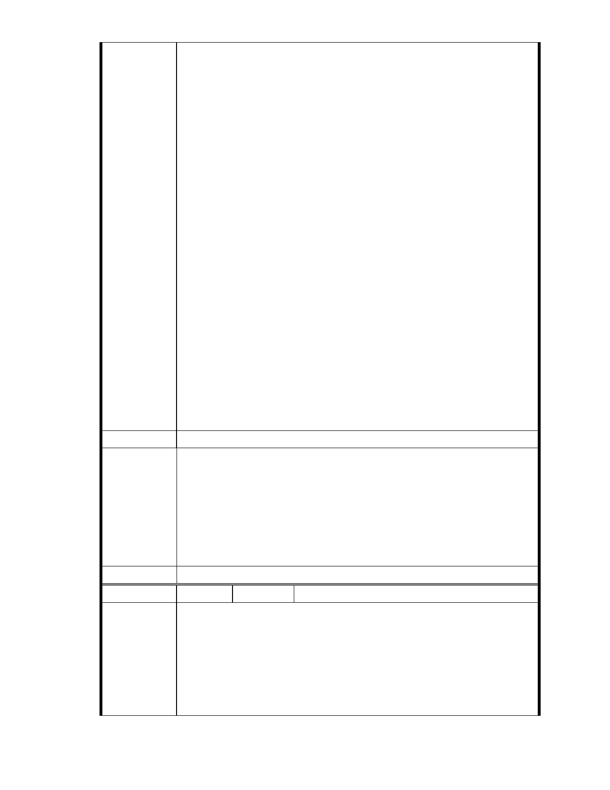

望政府要有長遠之見，及不可因人或因團體而做出不利於社會團體的決
策，大家才會有未來。」
九十五、戴綺薇：「請記取八八水災、甘肅舟曲縣等因為破壞水土所釀成
巨大生命損失和自然災害，忘記的人請到花博真相館再去回味泥石流的
慘狀吧!。真正的志工不需要大樓才能做善事。不妨建議慈濟將該筆開發
大樓的預定款，轉作保護大湖區的善款，不是更有意義！」
九十六、陳麗惠 chen hi hui：「慈濟關懷弱勢個人認同.但水土環境保持也
是百年大業.」
九十七、林致廷 RayLin：「我也是土生土長的內湖人 不允許自己的家鄉
被虛偽的理由而被破壞」
九十八、陳靖宜：「最近有很多開發案~ 像 202 兵工廠~中科 3 期~國光石
化開發等~ 政府到目前為止都沒有重視人民想要一個乾淨環境的聲音~
更不要說尊重環評(連法院裁定停工都沒用)~ 連慈濟這種公益團體也要
蓋大樓破環環境~ 真是令人心寒~"~」
九十九、翁素梅 Gigi：「以正義、慈善、公理之名去傷害另一個族群(生
物或自然環境)是人類才會犯的錯誤，無疑是個藉口，是個謊言，希望勢
力龐大的慈濟不要做偽善之事(對環境殘忍就是偽善)」
以上僅三度檢具 99 份「反對慈濟將內湖保護區變更開發」陳情意見，約
佔所有連署人 1/50，提供 貴委員會參考審議。另副知慈濟內湖委員邱師
兄，請再轉達慈濟高層社會大眾反對慈濟內湖園區的看法。
建議辦法
一、本案申請範圍於慈濟購得前已遭填平破壞作汽車停車場使用，已長
年不具保護區之功能；目前申請方案較先前方案已大幅降低開發強
度、調整使用項目並承諾大面積滯洪設施等回饋事項，顯示申請人
市府說明
欲改善地區環境之誠意。
二、後續審理程序將要求申請人加強與在地區民、社會大眾，就基地現
況、規劃方案及環境助益作為等方面加強溝通。
三、相關陳情意見將納入本案審查人民意見，依法定程序辦理。
委 員 會 決 議 同編號 1。
編
號 113
陳情人 孫武言（MA201210160063）
主旨
有關「變更臺北市內湖區成功路五段大湖公園北側部分保護區及道路用
陳 情 理 由 地為社會福利特定專用區主要計畫案」，依據都市計畫法第 19 條規定，
於送 貴會審議前，應先辦理公開展覽及舉行說明會，並將日期及地點登
報周知，詳如說明，敬請查照。
- 123 -